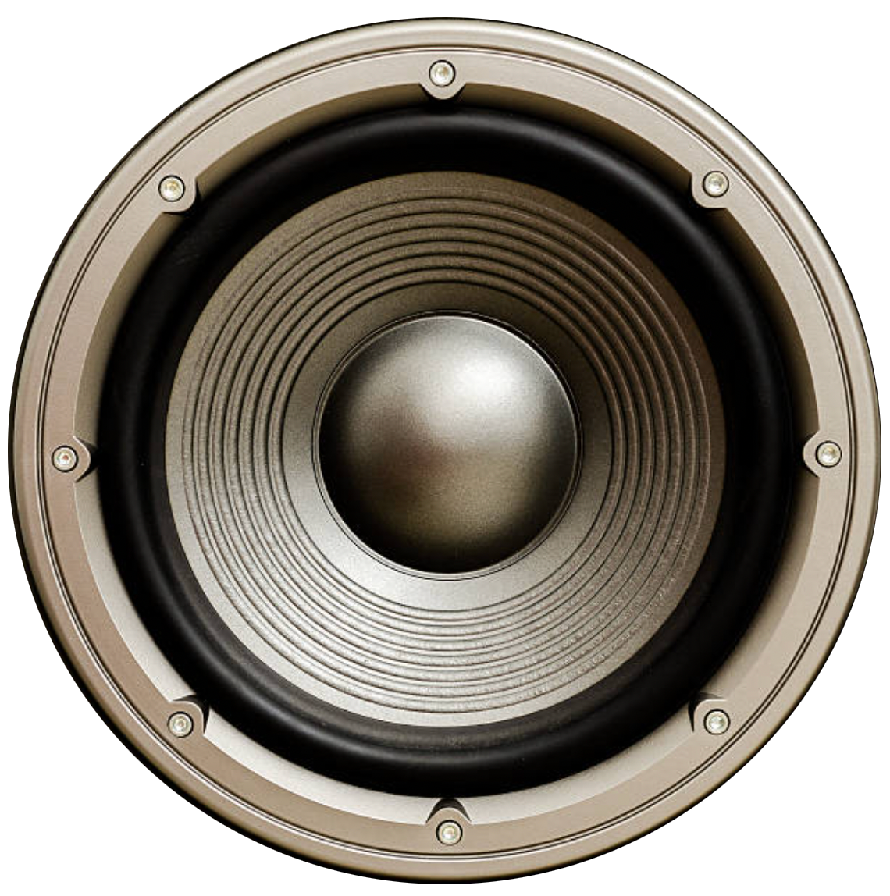
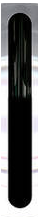

<div class="main" *ngIf="{ 
  config: config$ | async,
  karaokeUrl: karaokeUrl$ | async,
  karaokeUser: karaokeUser$ | async
} as obs$">
  <div class="rt-viewer" >
    <div [class.tv-wrapper]="!admin" [class.admin-wrapper]="admin">
      <ng-container *ngIf="!admin; else adminPanelTemplate">
        <div class="speaker-tex left res hide-sm"></div>
        <div class="tv-monitor-outer">
          <div class="tv-monitor-inner" [class.backstage]="stream === 'meshcast'">
            <div class="stream">
              <ng-container *ngIf="obs$.config?.showOpen; else landingPageTemplate">
                <ng-container  *ngTemplateOutlet="streamsTemplate"></ng-container>
              </ng-container>
  
              <ng-template #landingPageTemplate>
                <div class="landing-logo">
                  <!--  -->
                  <!-- <div>The  show  will</div>
                  <div>be  begin  shortly!</div> -->
                </div>
              </ng-template>
            </div>
          </div>
        </div>
        <div class="speaker-tex right res hide-sm"></div>
      </ng-container>
    </div>

    <div class="stream-btns" *ngIf="!admin">
      

      <div class="cam-btns-wrapper">
        <div class="cam-btns">
          <button class="push--flat" [class.active]="stream === 'dolby'" (click)="setStream('dolby')">1</button>
          <button class="push--flat" [class.active]="stream === 'meshcast'" (click)="setStream('meshcast')">2</button> 
        </div> 
        <h1 class="res hide-short">CAMERA</h1>
      </div>

      <div class="group right">
        
        
      </div>
    </div>
  </div>

  <ng-template #streamsTemplate>
     <div class="streams">
        <ng-container *ngIf="obs$?.karaokeUser?.vmixEmbed; else dolbyStreamTemplate">
          <div class="vmix">
            <iframe allow="camera *; microphone *" [attr.src]="obs$?.karaokeUser?.url" allowfullscreen></iframe>
          </div>
        </ng-container>
        
        <ng-template #dolbyStreamTemplate>
          <iframe src="https://viewer.millicast.com?streamId=BNfr94/BQFKN" allowfullscreen></iframe>
        </ng-template>
    
        <div class="stream" [class.overlay]="!admin" [class.hide]="!admin && stream !== 'meshcast'">
          <iframe 
            src="https://vdo.ninja/?scene&room=BQFKN_Backstage&noaudio" 
            allowfullscreen>
          </iframe>
        </div>
     </div>
  </ng-template>

  <ng-template #adminPanelTemplate>
    <div class="admin-panel">
      <ng-component *ngTemplateOutlet="streamsTemplate"></ng-component>
      <div class="show-status" [class.open]="obs$?.config?.showOpen" [class.closed]="!obs$?.config?.showOpen">
        <button (click)="toggleShowOpen(obs$?.config?.showOpen)">
          {{ obs$?.config?.showOpen ? 'Close Show' : 'Open Show'}}
        </button>
        <em>{{ obs$?.config?.showOpen ? 'Show is Open!' : 'Show is Closed'}}</em>
      </div>
  
      <div class="backstage-link">
        <h2>Backstage Camera</h2>
        <div>https://vdo.ninja/?room=BQFKN_Backstage&push=cam1&meshcast&mute&clean</div>
      </div>
  
      <div class="admin-form">
        <div class="karaoke-user" *ngFor="let ku of karaokeUsers; let i = index">
          <div class="header-switch">
            <h3>{{ku?.name}}</h3>          
            <ui-switch 
              class="flex-row" 
              (valueChange)="onChangeKaraokeSwitch($event, i)"
              [(ngModel)]="karaokeUsers[i].vmixEmbed">
            </ui-switch>
          </div>
          <app-inline-edit
            type="input"
            theme="dark"
            [copy]="false"
            aria-placeholder="VMix URL"
            [monospace]="true"
            (valueChange)="onChangeKaraokeUrl($event, i)"
            [(ngModel)]="karaokeUsers[i].url"
          >
          </app-inline-edit>
        </div>
      </div>
    </div>
  </ng-template>

  <div class="rt-chat res hide-md" *ngIf="chatUrl">
    <iframe [attr.src]="chatUrl"></iframe>
  </div>
</div>
